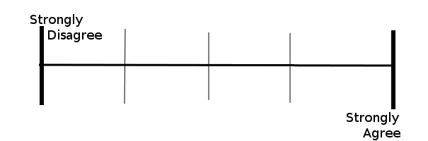

Methodology
Determining Means for Measurement
Measuring happiness and overall well-being has proved to be a difficult task. Even in today's world, with extensive histories of science, psychology, and anthropology as models, there is still a shroud of mystery accompanies a puzzle such as this. The exact happiness level of an individual is shaped both internally and by the influence of the external environment. We desired to investigate the importance of specific influences of the external environment, specifically the city in which people reside, and we recognized that for this type of investigation, there are two ways of examining well-being and happiness. One is a subjective, self-report approach, in which individuals respond to survey statements in a way that rates their outlook on the subject given, normally on a scale. The other is more objective but less personal, examining existing facts and statistics about the city. Both of these approaches have advantages and disadvantages, so it was important for us to decide which would best fit the goals of our current study.
The premise of presenting subjective statements for agreement is to get a first-person account of the subjects’ attitude or feelings, to find how members of communities within a city actually perceive their situation. For example, a statement could say, "I am satisfied with my life right now,” or, “I often feel anxious about my current living situation.” Then, the subjects are to choose the number from the scale, generally 1 to 5 or 1 to 7 with specification as to which corresponds to agreement and which to disagreement, which best represents their feelings. Although this is not definitive data, due to the potentially inaccurate nature of self-report, it gives the researcher an in-depth look at tendencies or correlations of a population of people within a given study. On the other hand, objective measures of the factors effecting well-being, such as official crime rates, number of entertainment establishments, or average standardized test scores of elementary and secondary students, do not consider the population’s individual perceptions of their own happiness. Residents could be highly satisfied or terribly disappointed with their lives despite objective data that would predict the contrary. Comparing self-report data from a city’s people with objective measures about that city could provide valuable insight on what actually determines a well-being.
Developing both subjective and objective well-being measures has proven to be problematic. According to Smith and Clay (2010), “Problems with well-being variables are: they are typically static, covering only one point in time; data are not always readily available; predefined indices may miss situation-specific issues; and the data are expensive to collect” (p. 159). That is not to say that developing a well-being measure cannot be done. Smith and Clay argue that a well-being measure needs to follow four criteria to be considered applicable. It needs to follow logically and simply from available data, allow comparisons across time and among different places, apply to groups as well as to individuals, and contain both objective and subjective components.
However, because it is often is not feasible for researchers to gather both objective and subjective data within a single study, we decided to examine whether the two types seemed to produce significantly different results or whether both types could be considered equally valid. To do this, we needed to compare objective and subjective data that measured the same elements and to see whether they produced similar results. If so, it is likely that they are both valid measures. If not, one or both of them are inaccurate. A study conducted by Oswald and Wu (2010) examined the correlation of subjective data provided by 1.3 million United States citizens across all 50 states with a previous ranking of quality of life in each state based on objective factors. The purpose was to find whether the two types of measures produced the same rankings, and the study found that rankings based on self-report data nearly matched the state rankings of the previous objective study, suggesting that either will produce accurate measurements of well-being.
Because of the findings of the Oswald and Wu study, and because self-report data seemed to be the most widely used method among other previous research, this type of data seemed fitting for our study. Whether or not this subjective method allows for objectivity, it is logical that the best way to determine whether people have a high quality of life is to ask them whether they believe they do. Even if their perception is inaccurate, it is that perception that most directly affects their happiness. Self-report from a sample of a population also provides for a broader nature of the data that is measured and qualitative rather than quantitative study. For example, we may count the number of extracurricular activities offered in a school and how many students participate in them, but without asking residents for their opinions on the quality of those activities, we cannot know whether that aspect of education is actually improving lives. Because of the subjective trend in previous research and the logic behind it, we chose a self-report survey as the format of the current study.